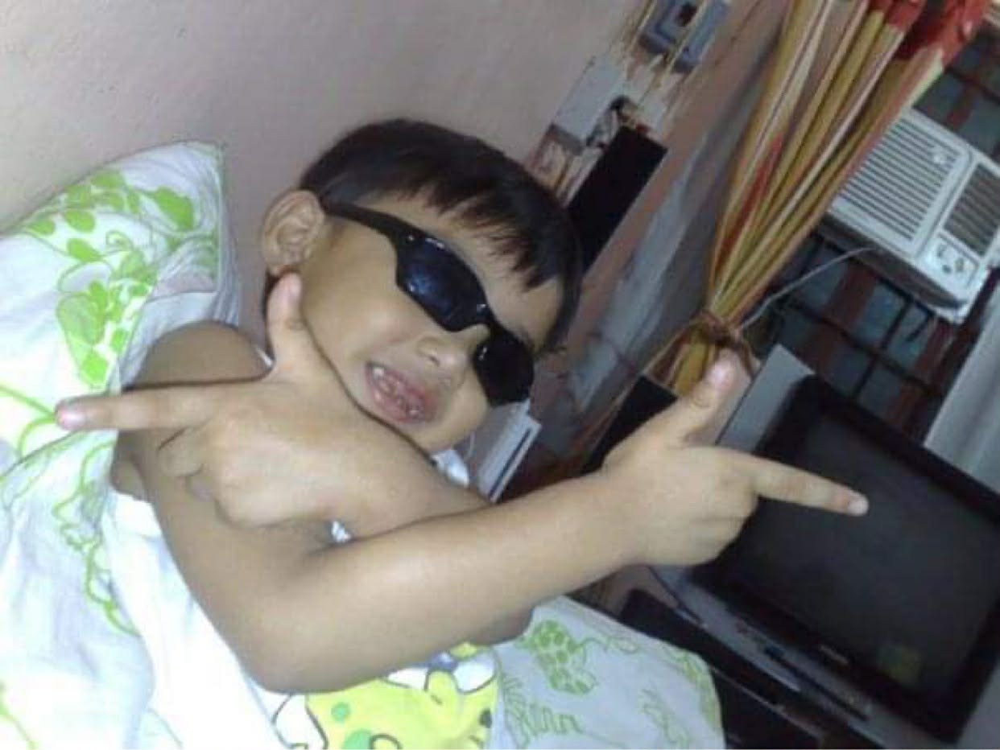

Childhood
Where my journey began and values were formed.

I was born and raised in Rosario, Pasig City, where my childhood was full of simple but happy moments. Growing up as the oldest child taught me how to be responsible early in life. I spent most of my days playing with neighborhood kids and enjoying the outdoors. When I wasn’t outside, I played with Legos and built small creations that made me feel imaginative.
My parents always supported me and made me feel safe at home. I learned a lot of values from them and from the experiences I had as a kid. My siblings also looked up to me, so I tried to be a good example for them. Our family gatherings were always fun and full of stories.
Teenage Years
Curiosity and exploration shaped my interests and skills.

My teenage years helped me discover more about myself and what I wanted to learn. In high school, I met friends who supported me and shared the same interests. This was also when I became more curious about technology. I started exploring things like Photoshop, Blender, and After Effects.
I also got interested in FiveM modding and tried learning basic programming to improve my projects. Even though school became harder, I learned how to manage my time better and balance hobbies with responsibilities.
College
Growth, independence, and preparation for the future.

My college experience at the University of the East has been full of learning and personal growth. I became more independent and responsible with my time. College taught me how to balance schoolwork, projects, and personal hobbies.
Working with classmates on group projects helped me learn teamwork and communication. My professors encouraged me to think critically and creatively. Overall, my time in college helped me grow as a student and as a person, preparing me for the next steps in life.